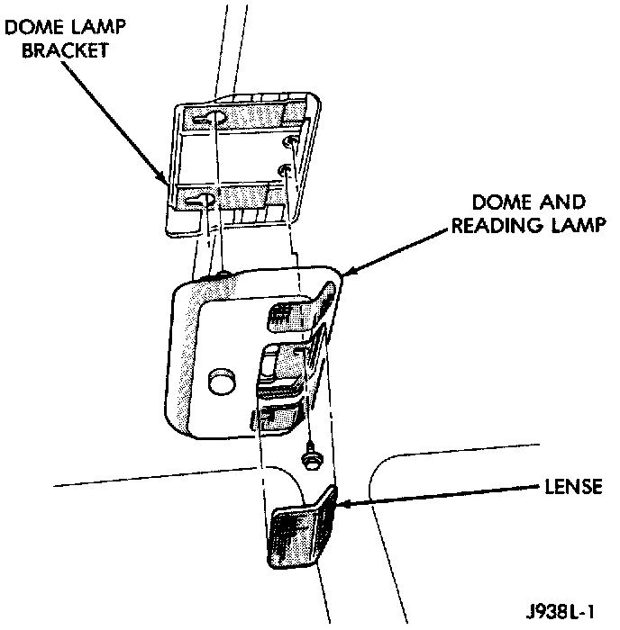

Map Light: Service and Repair
Dome/Reading LampREMOVAL
1. Insert a flat blade screwdriver in slot at the center of the lamp housing. Rotate screwdriver upward and unsnap dome lamp lens.
2. Pull lens downward. Remove it from lamp housing.
Dome/Reading Lamp:

3. Remove the lamp housing retaining screws.
4. Push housing forward and release housing from bracket.
5. Disconnect wire harness connectors.
6. Remove lamp housing from headliner cavity.
INSTALLATION
1. Position dome/reading lamp housing at headliner cavity
2. Connect wire harness connectors.
3. Locate rear pods of the lamp in the slots of the dome lamp bracket. Push lamp housing up and to rear.
4. Install the lamp housing screws.
5. Position dome lamp lens at lamp housing. Snap lens into housing.